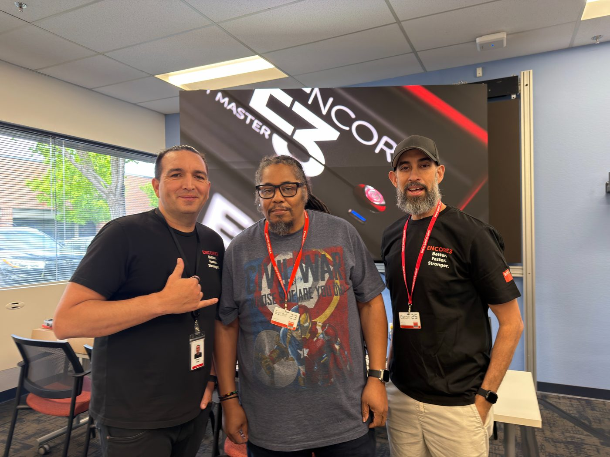
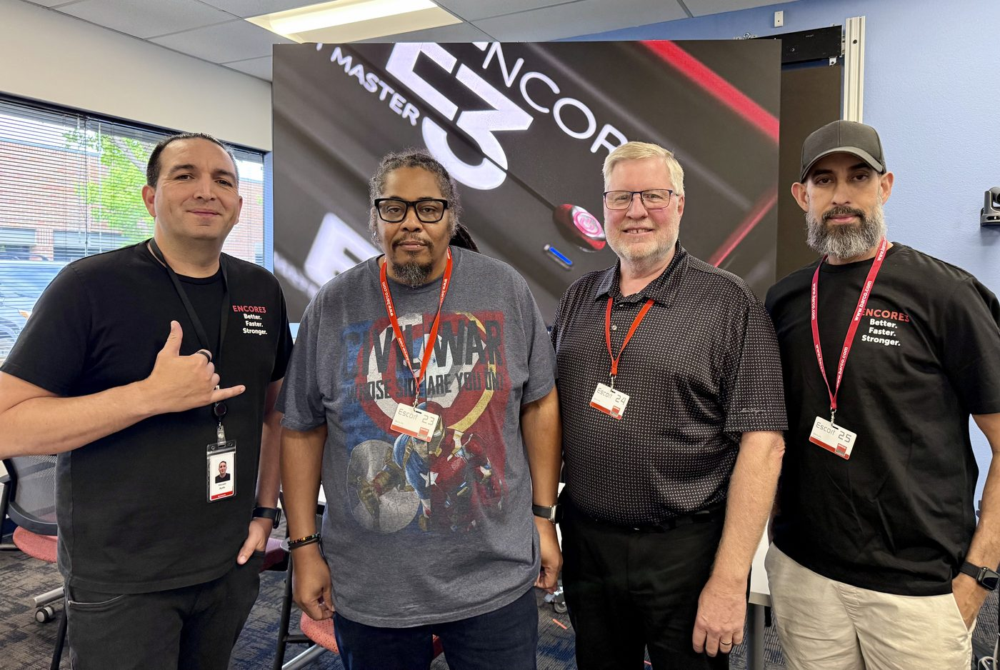

Encore3 launched in June of 2025, and in the time since, plenty has been said about it — both negative and positive. As a veteran E2 engineer, and before that Screen Pro2 and Encore1, I decided it was time to head to Barco's Sacramento, USA headquarters for Encore3 certification — direct, hands-on experience with the unit, and a chance to properly digest the workflow knowledge taught by one of my favorite people in this industry, Vincent Ayala of Barco, and a fellow US Navy man like myself. Good vibes from the jump.


Certification week at Barco's Sacramento HQ — with Vincent Ayala and the rest of the class.
With two other students in class — an ex-Marine and an ex-Soldier — it was three days of intense learning, trying to absorb three versions' worth of Event Master, 10.0 through 10.2. At age fifty-seven, that's a challenge. Ha ha. But that's what certification is for — not a weekend skim of a manual, but three straight days of Presets, Cues, User Keys, Layers, Sources, and mastering the controller. Might sound like the basics, right? As ops and engineers we're used to getting the rig up and running. It's the programming before the show, and the changes on the fly once it's live, that separate knowing a box from running one.
What the class actually teaches is how to speed up your workflow using the tools already built into the box, instead of staying fixated on the hardware in front of you. That's not just my read on it, either — it's literally how Barco frames their own training series, right down to an episode called "Mastering Workflows for Better, Faster, Stronger Productions." That reframe alone was worth the trip. I believe in direct manufacturer training — when you can get it, you take it. You get to see the faces behind the platform, talk to them on the phone, respond to an email and know a real person is reading it, chat with the engineers who actually wrote the code, and every once in a while, catch a glimpse of something still mysterious, still coming. That access doesn't show up on a spec sheet, but it changes how you trust a platform.
The physical hardware itself is exactly what you'd expect from Barco — solid, well-built, no surprises in the chassis. What's worth hearing about is what's actually running under that hood: Barco's Athena scaling engine, paired with the modular Gen2-card architecture that carries the rest of the platform. That combination is doing more work than most ops realize until they've actually sat in a class and watched it get pushed.
The "Lack of Layers" Problem — Solved
One of the loudest early criticisms of Encore3 was a perceived lack of layers compared to what E2 ops were used to. I promise you, there's no lack of layers. The workflow highlight that changes the math entirely is Output Layers — the ability to break a single screen-wide layer out into individual layers per physical output. A layer that used to span your whole canvas can be split so that output one, output two, and output three each carry their own independent version, numbered by dot notation: 1.1, 1.2, 1.3.
Take it further and you can regionalize those output layers — merge two adjacent outputs back into a shared region without going all the way back to a full screen layer, or even merge non-adjacent outputs so a layer floats cleanly from output one to output three, skipping the middle, with Encore3 compensating the transition timing across that boundless canvas automatically. Combine that with single layers — splitting a mixed A/B layer pair so both sides live on screen at once instead of just transitioning between them — and a destination that started with four screen layers can realistically carry thirty-two layers on screen at the same time. That's not a lack of layers. That's an ops team that hadn't been shown the tool yet.
"I promise you, there's no lack of layers. That was never the ceiling — it was the learning curve."
Flex Cards — The Real Sticking Point
Now let's talk about what's actually public and what's actually still missing, because I want to be straight with you here. The chassis uses color-coded slots, and once you build one out in the configuration software, the logic is clean: the multi-color slots are the true Flex Slots, usable for more than one role. On the right side of the chassis, those slots take input or output cards, your choice. On the left, a single slot, marked blue and yellow, serves as either an input or link expansion. The architecture is real, and it's genuinely well thought out. Even Barco's own How-To series admits the current lineup is Gen 2 cards "for now" — with new cards and new controllers on the table for later, once the platform's ready for them.
But one of the major sticking points right now, and I'll say it plainly, is the lack of the actual Flex Card that Encore3 is architected to eventually take advantage of. The slots are ready. The card that unlocks their full potential isn't shipping yet. I feel Barco is being patient here, and I think they'll get it right in the end. If you've been in this industry long enough, and you understand how software and hardware design actually works together, you know it can be genuinely challenging to ship both at once and ship them well. Barco is not the first manufacturer, and won't be the last, to announce a product that a chunk of their user base feels didn't fully hit the mark on day one. The difference is what a company does in the two years after that announcement. So far, Barco's answer has been steady, unglamorous engineering, release after release. That counts for something.
What 10.3 Actually Brings
With the Event Master 10.3 update, announced this week, Barco adds Flip options to the Layer Effects tab — None, H, V, and H/V, letting an operator mirror a layer horizontally, vertically, or both, natively, without routing around it upstream. It's another small step toward bringing the workflows E2 ops already know into the Encore3 ecosystem, where they belong.
- Layer Flip (H / V / H+V): native mirroring per layer, right in the Effects tab.
- Backup input state now sticks to presets: a preset saved while a backup input is live will correctly recall whichever input — primary or backup — was actually active at save time.
- Chroma key picker cleaned up: presets saved mid-keying no longer restore the color picker to an active state on recall.
- Cue action steps raised to 100: more room for fully automated, complex show cues.
- Four bug fixes: output-copy format resets after a soft reset, custom format/EDID propagation to client units in a linked system, preset aspect-ratio recall, and an MVR display glitch around AOI markers.
The Quiet Quality-of-Life Wins
The configuration page, while it still feels familiar to anyone coming from E2, has gotten a real makeover, and it's for the better. The Simulator has gotten some love too — I always felt like I couldn't save an E2 simulator backup and reliably restore it onto a live box. That friction is gone. The Output and Screen-to-Input setup is faster and more fluid than what I was used to.
MVR has always been solid on this platform, but now it's built as an internally created source instead of requiring a dedicated HDMI card to generate it. No more running HDMI out to a Decimator just to get SDI — since it's created internally, you can route it straight out through whatever card is already installed, Tri-Combo or SDI. Small workflow change. Big time saved on a load-in.
"No more HDMI out to a Decimator just to get SDI. It's an internally created source now — route it straight out."
So — Prime Time?
Yes — and I'm saying it as someone who just spent three days inside the box, not someone reading a spec sheet. The "lack of layers" critique doesn't hold up once you actually learn Output Layers and regionalization. The Flex Slot architecture is real and thoughtfully built, and even with the dedicated Flex Card still on the way, that reads to me like a platform built with room to grow, not one falling short. 10.3, quiet as it is, keeps closing the gap between the workflows E2 ops already trust and the ones Encore3 is asking them to learn. Barco has been patient with this platform, and that patience is paying off. I'll be operating on Encore3 going forward, and I'm walking into that with confidence, not reservation.
I don't own an Encore3; I'll rent. Some of my clients do. As a freelance engineer, I needed to be Ready When the Call Comes.